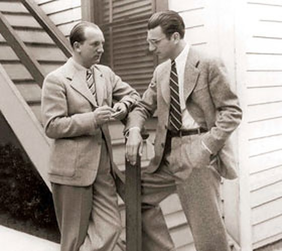
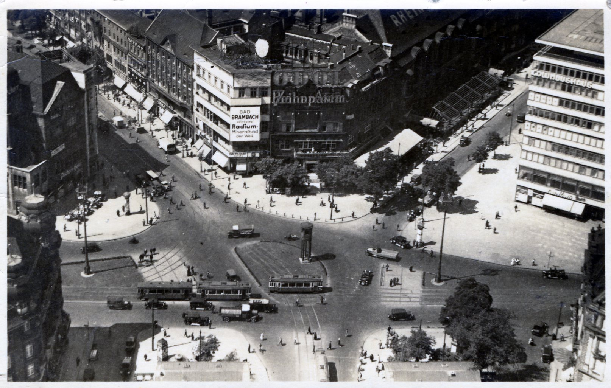

Collaboration Statistics

Bronisław Kaper & Walter Jurmann - Creative Partnership

European Period (1930-1934)
Diverse studio landscape: UFA-Berlin, Aafa-Film, Emelka, Cine-Allianz, and French productions
Hollywood Period (1935-1939)
MGM dominance with 16/20 films; additional work at Universal Pictures and 20th Century Fox
Between Warsaw and Berlin
1926–1929
Early songs with Polish or German lyrics
European Period
1930–1934
Berlin, Paris & international films
Main studios: UFA, Aafa, Emelka
Hollywood Period
1935–1939
MGM studio contract (73% of films)
Main studios: MGM, Universal
Warsaw-Berlin
1926–1929
Early songs with Polish or German lyrics
Partners: Andrzej Włast & Fritz Rotter
European Period
1930–1934
Berlin, Paris, international films
Partners: Walter Jurmann & Fritz Rotter
Key studios: UFA-Berlin, Aafa-Film, Emelka, Cine-Allianz
Hollywood Period
1935–1939
MGM studio contract
Partners: Walter Jurmann, Gus Kahn, Ned Washington
MGM dominance: 16/20 films (73%); also Universal, 20th Century Fox